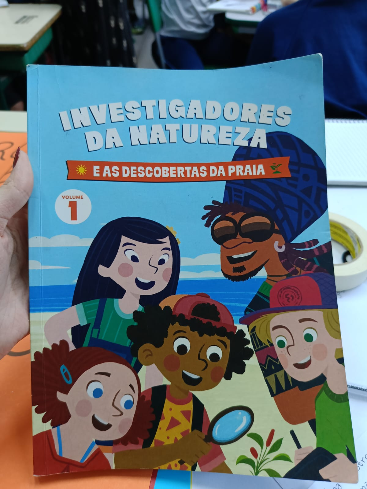
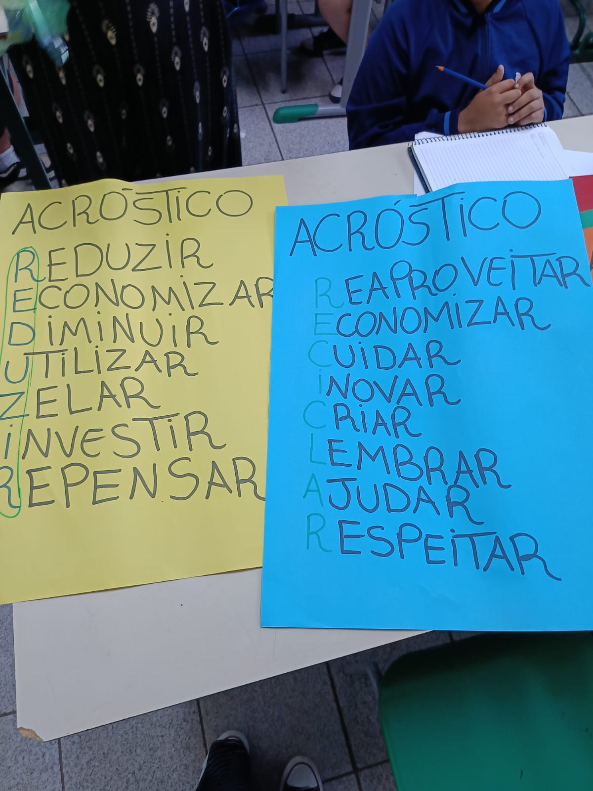
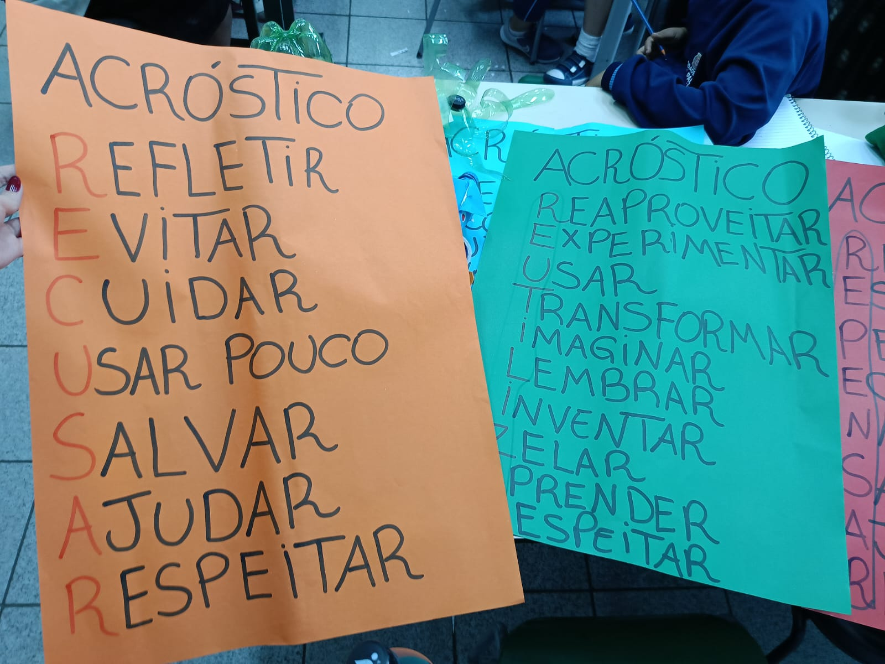
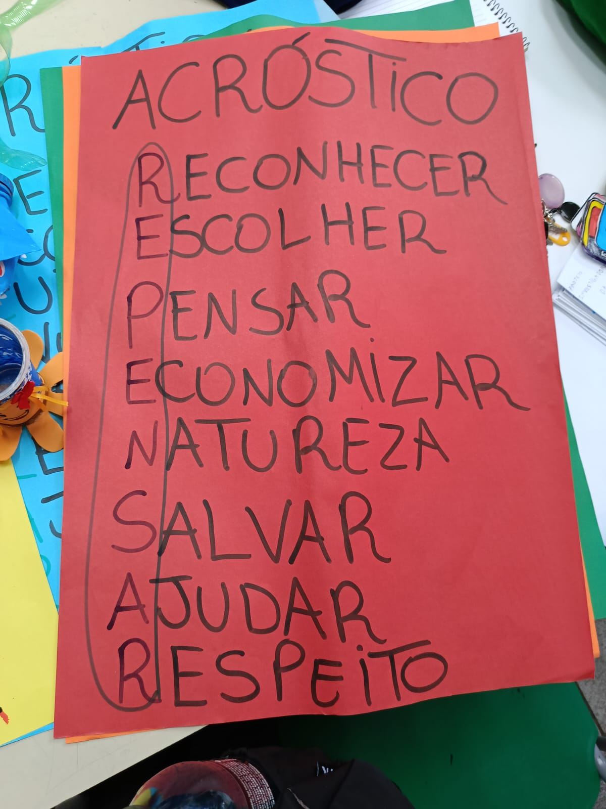

Investigadores da Natureza, o projeto da escola EMEF Tenente Aviador que chamou a atenção de moradores do condomínio com sua manifestação.
No dia 13 de agosto de 2025, foi iniciada uma manifestação pacífica com alunos do terceiro ano do fundamental, no qual consistia em levantar cartazes sobre reciclar, repensar, recusar, reduzir e reutilizar. As crianças gritavam que a calçada é pública e que era para recolher as necessidades de seus animais de estimação.
Após entrevistar a professora Mel, responsável pelo projeto e PAP (Professora de Apoio Pedagógico), ela nos relata as diversas situações em que os alunos chegavam com os sapatos fedidos e assim que perguntavam sobre o que tinha acontecido, os pequenos ficavam com vergonha de dizer que haviam pisados em fezes dos animais ou até em lixo que são colocados ali - seja por moradores da região, comerciantes locais ou apenas pessoas que passam por lá.
Nossa entrevistadora Yoná Castro, foi até o local para poder parabenizar sobre essa ação da professora e da escola, aproveitando para fazer algumas perguntas. Assim que questionou sobre o surgimento da ideia, a professora respondeu que surgiu por conta de um livro. “‘Investigadores da Natureza’ foi um livro em que o cantor famoso, Carlinhos Brown fez, e me inspirou. O livro diz sobre a sustentabilidade e as maneiras de reciclar”. Ela também usou documentos da SME (Secretária Municipal da Educação), com base na BNCC (Base Nacional Comum Curricular) e com o documento de Educação Ambiental. A professora também complementou, dizendo que é PAP e trabalha com as dificuldades de aprendizagem na leitura, escrita e resolução de problemas, fazendo um combinado com os alunos dos 3º anos, com a alfabetização e PAP colaborativo, junto com os colegas especialistas.

Assim que propôs essa atividade para os pais e alunos, ela recebeu apoio e uma reação positiva sobre. E, quando teve a mostra cultural, os pais participaram de oficinas nas quais criaram cartazes junto com os filhos.


E hoje, até o dia da entrevista, professores e alunos dizem que houve uma melhora na higiene da calçada. Moradores do condomínio também gravaram essa manifestação, depois foram na escola pedindo panfletos sobre o projeto para distribuírem e falarem sobre a importância da calçada escolar.

E, por fim, a professora Mel comentou que ainda tem cinco ações sobre o projeto e, até o final de novembro, eles têm uma missão: ir à praia para espalhar a sustentabilidade. É um projeto novo, no qual pode tomar uma proporção grande e deixar uma continuação no ano que vem. Também complementou dizendo que procuram por parcerias com os moradores.